FPV Flight Line docs
Everything you need to turn a few clicked waypoints into a freestyle FPV drone flight: install, the first flight in one minute, routes, ready-made shots, following a subject, every move, the pilot, cameras and fixes. The add-on lives in the Flight Line tab of the 3D Viewport sidebar.
Install, update, remove
- Download
fpv_flightline-1.0.0.zipfrom your Superhive downloads. Don't unzip it. - In Blender open Edit › Preferences › Get Extensions, open the small arrow menu at the top right and choose Install from Disk…, then pick the zip. Dragging the zip onto the Blender window works too.
- The add-on is enabled straight away. In the 3D Viewport press N and open the Flight Line tab.
Command line, for example on a render node: blender --command extension install-file -r user_default -e fpv_flightline-1.0.0.zip. Render nodes don't need it at all: the file renders without the add-on.
Your first flight in one minute
- New Flight. Press it in the Flight Line tab. The mouse pointer becomes a crosshair.
- Click the start. Click on your scene where the drone should start. The drone, its FPV camera and a chase camera appear there.
- Click where it flies. The drone flies the route straight away. Keep clicking to add more points.
- Finish. Press Enter (Esc or right-click also finish). Ctrl+Z inside the tool removes the last point.
- Watch. Under Watch, press FPV or Chase and play the timeline.
If you finish after only one click, a second point is added 15 m ahead in the direction you were looking.
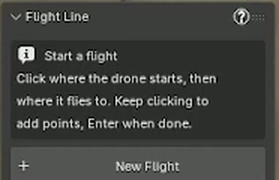
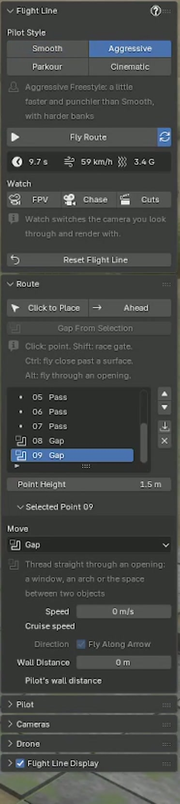
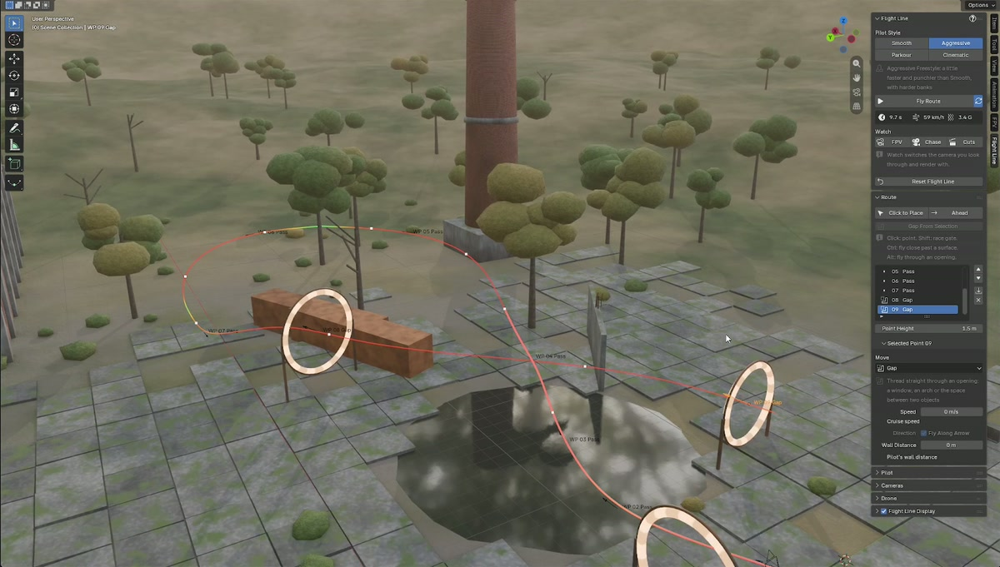
Building a route
Click to Place adds points with the mouse. While it's active, the header shows the keys.
| Action | Adds |
|---|---|
| Click | A waypoint at Point Height over the clicked surface. |
| Shift + click | A race gate standing on the clicked spot, facing the direction of travel. |
| Ctrl + click | A proximity skim, 0.5 m from the surface, flown very close. |
| Alt + click | A gap: finds the opening near the click (a window, a doorway, the space between two buildings) and threads straight through it. |
| Backspace / Ctrl+Z | Removes the last waypoint you placed. |
| Enter, Esc, right-click | Done. |
Next point along the arrow
Adds a waypoint after the active one. At the end of the route it goes 15 m along the waypoint's arrow, stopping short of walls. Rotate the arrow (R Z) to aim it. In the middle of a route it goes halfway to the next point.
Gap From Selection
Select one object with a hole in it, or two objects with a space between them. The waypoint is placed in the opening and flown straight through.
Plain objects
Move waypoints with G and snapping. In the list, the arrows reorder, X deletes and the arrow-down button drops a point onto the surface below it.
Route From Curve (Route panel) turns the selected curve into a route with a waypoint every few meters. Draw the line with the curve tools or reuse a path you already have.
15 ready-made shots
Select an object and press Add Shot (welcome screen or Route panel). The shot is sized to the object and approached from your current view. It's built from normal waypoints and moves, so you can edit it, and it keeps clear of your scene like any route. This replaces the current route.
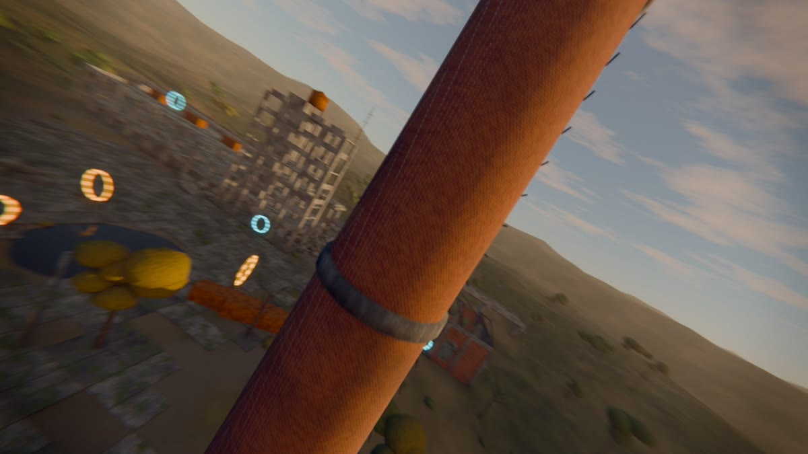
REVEALSRising Orbit
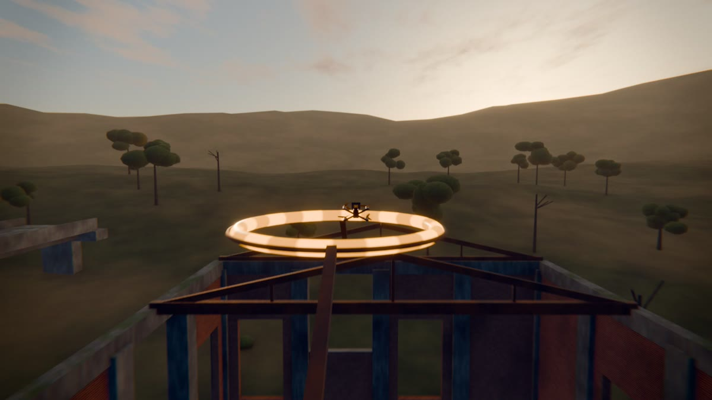
TRICKSPower Loop Over
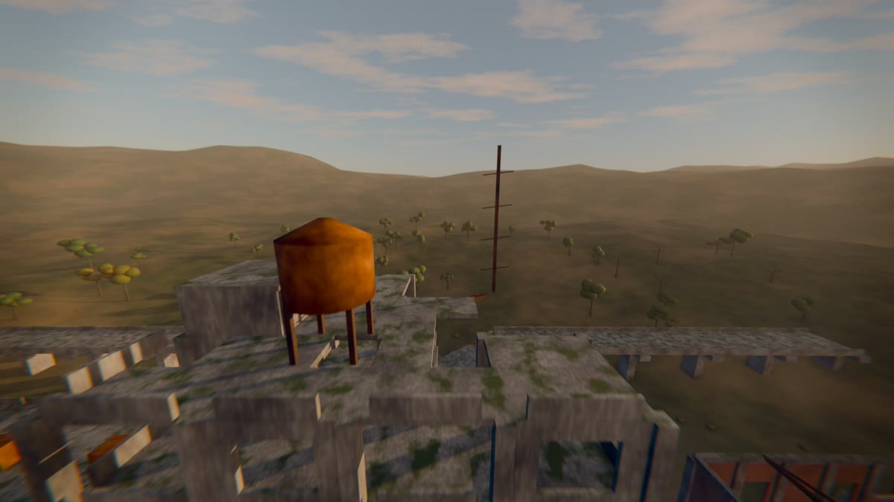
REVEALSCrest Reveal
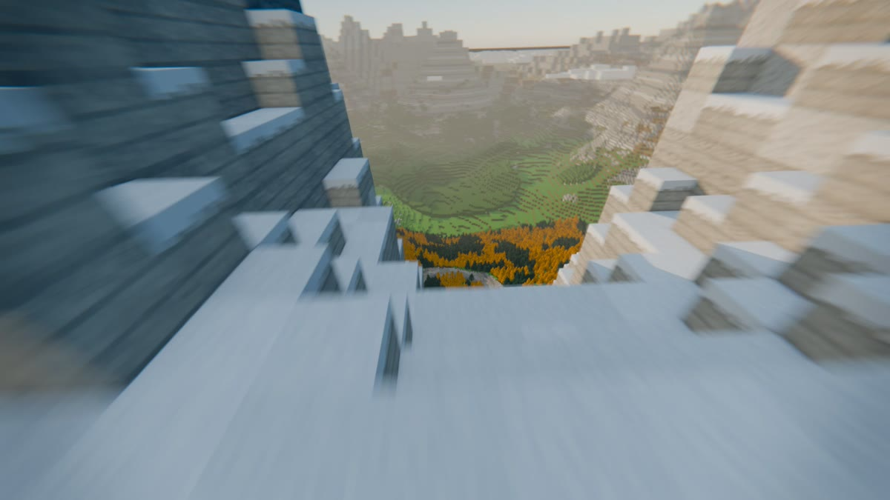
SPACESValley Run
| Group | Shots |
|---|---|
| Reveals | Orbit Reveal (fly in, circle once, fly out), Rising Orbit (spiral up around it), Descending Vortex (spiral down from above), Punch-In Reveal (race in low, climb over it), Crest Reveal (climb the face and skim over the top edge), Dive Reveal (over the top and down the far side). |
| Fly-bys | Fly-By (pass alongside, turning to keep it in view), Parallax Fly-By (low and close, looking ahead), Roll Pass (a roll right beside it). |
| Tricks | Power Loop Over, Split-S Drop, Flip Over, Orbit Break-Out (circle it, then break away at speed). |
| Spaces | Doorway Entry (finds the door, window or arch in the object and flies through it), Valley Run (low and fast across terrain, following its surface). |
Follow Subject
Film anything that moves: a car, a character, a bird. Open the Follow Subject panel, pick the Subject, a Follow Style and press Follow Subject.
| Style | Where the drone flies |
|---|---|
| Tail Chase | Right behind the subject, a little above it. |
| Low Chase | Low and close behind, just above the ground. |
| High Follow | Higher and further back, showing the surroundings. |
| Side Pace | Alongside the subject, matching its speed. |
| Overtake | Starts behind, passes it and flies on ahead. |
- Behind, Side and Height set the distance. Behind is measured along the subject's path, so the gap holds through bends.
- Point Every is the time between the waypoints made along the path. Shorter follows twisty motion more closely.
- Each point is pinned to the subject's frame (Arrive at Frame) and the subject becomes a look target, so the camera stays on it.
- If the subject is faster than the pilot's Top Speed, Top Speed is raised to keep up.
- The subject and its children are not obstacles, so the drone doesn't dodge the car itself.
Moves
Select a waypoint and pick its move under Selected Point. Moves that need room are measured against your scene: if one doesn't fit it is flown smaller, and with no room at all the drone flies straight through and the panel tells you which waypoint it was.
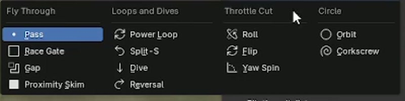
| Move | What the drone does | Size |
|---|---|---|
| Pass | Flies through the point. | |
| Race Gate | Flies straight through a gate placed at the waypoint. | |
| Gap | Threads straight through an opening along the waypoint's arrow. | |
| Proximity Skim | Flies very close past the nearest surface. | |
| Power Loop | A full vertical loop that starts at the waypoint and goes up and over. | Loop radius |
| Split-S | Rolls inverted and pulls down, coming back the other way lower. | Radius |
| Dive | Rolls over the edge, dives straight down, pulls out at the bottom. | Depth |
| Reversal | Half loop up and roll upright, coming back the other way higher. | Radius |
| Roll | Throttle cut, 360° roll, punch out. | Turns |
| Flip | Throttle cut, 360° flip (Right = backflip, Left = front flip). | Turns |
| Yaw Spin | Floating flat 360° spin. | Turns |
| Orbit | Circles the waypoint, optionally looking at it. | Radius, turns |
| Corkscrew | Spirals up around the waypoint, for trees, pillars and towers. | Radius, turns, climb |
Every waypoint also has Speed (0 uses cruise speed), Direction: Use Arrow (gates and gaps always do) and Wall Distance (0 uses the pilot's).
Timing and aim
Arrive at Frame
Tick it on any waypoint and type a frame: the drone passes that point on exactly that frame, for music cues and edit points. The speeds before it are solved to fit, easing smoothly between pinned points. Pin the first point to choose the frame the flight starts on. If a pin needs more speed than Top Speed allows, the panel says which point and how fast.
Look Targets
The nose and FPV camera turn toward objects you choose: a statue on a fly-by, a car, a doorway. Add Look Target uses the selected objects, or adds a target at the 3D cursor. Several targets blend by strength; moving targets are followed frame by frame.
| Look target setting | Meaning |
|---|---|
| Strength | 1 keeps the camera on the target, 0.5 is a glance. |
| Notice Distance | The drone starts turning toward the target from this distance. |
| Lock Distance | Closer than this, the camera stays on the target at full strength. |
| Release Angle | Let go once the target is this far behind the flight direction. |
Pilot and physics
Pilot Style, the four buttons at the top of the panel, sets everything at once. Changing a setting below switches to Custom; press a style to go back. With the ? button on, each group explains itself.
Smooth
Flowing lines and soft, confident turns. The best all-round look.
Aggressive
A little faster and punchier, with harder banks.
Parkour
Slower and tight to every surface.
Cinematic
Slow and gentle, for reveals and walkthroughs.
| Setting | Meaning | Group |
|---|---|---|
| Cruise / Top Speed | Speed between points; fastest the drone can fly, which also sets how far it leans forward. | Speed |
| Rates | Fastest rotation in °/s, also the speed of rolls and flips. Freestyle pilots use about 500–1000. | Handling |
| Stick Response | How quickly the drone follows the pilot; 0.05–0.1 s feels like a tuned quad. | Handling |
| Line Smoothing | Rounds off the line. Lower is sharper. | Handling |
| Look at Next Point | How much the nose and FPV camera aim at the next point or gate ahead of time. | Eyes |
| Look Ahead | How early the nose turns into the next part of the line. | Eyes |
| Motor Power | Thrust to weight. A typical 5-inch freestyle quad is 5 to 8. | Power |
| Turn Strength | How much power the pilot uses in turns, and how far it may bank outside tricks. | Power |
| Wall Distance | Distance kept from your scene. | Safety |
| Camera Shake / Propwash | Stick corrections and turbulence; the wobble when punching out through its own wash. Shake Variation gives a new shake on the same line. | Shake |
| Start / End | Already Flying or From Hover; Keep Flying or Stop. Fit Timeline sets the frame range to the flight. | Start & End |
Tilt from thrust
A quad pushes only along its own up axis, so it leans into every acceleration, leans forward against drag, and goes inverted when the line pulls down harder than gravity.
Speed from the motors
Slower in tight corners and climbs, faster in dives, and it can't brake harder than its motors allow.
Stays clear
The route keeps its distance from your geometry and finds a way around walls between waypoints. The same settings always give the same flight.
Cameras and auto cuts
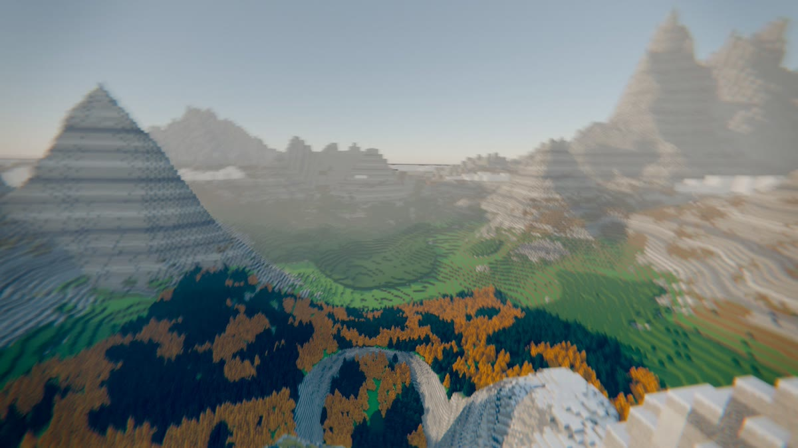
FPVFPV camera
Camera Uptilt (pilots use 20–40°), FPV Field of View and Speed Widening, which opens the lens as the drone speeds up.
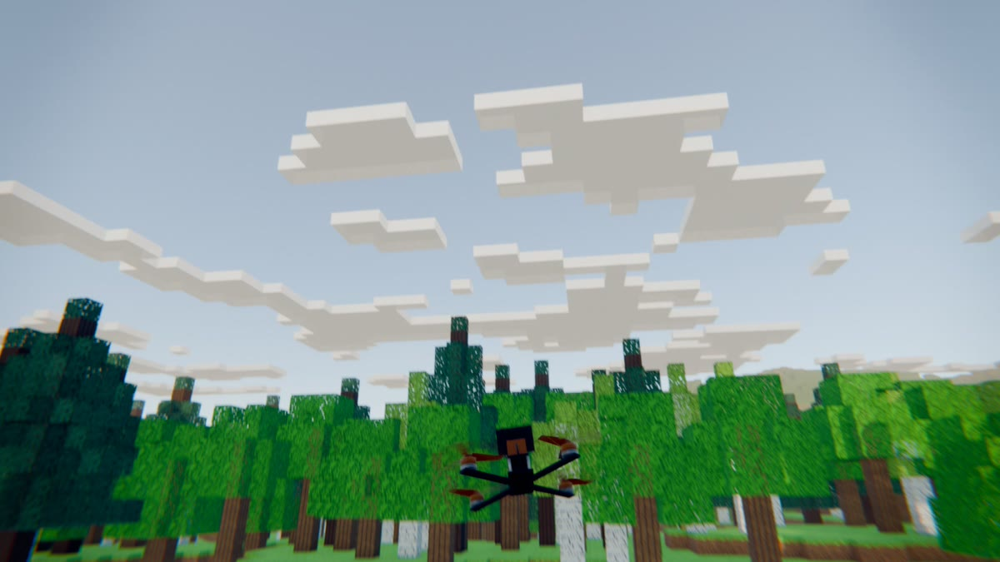
CHASEThird person
Chase, Wide Follow or Top Chase, with Distance, Height, Lag, Speed Zoom and Bank. It backs off during tricks so the whole move stays in frame.
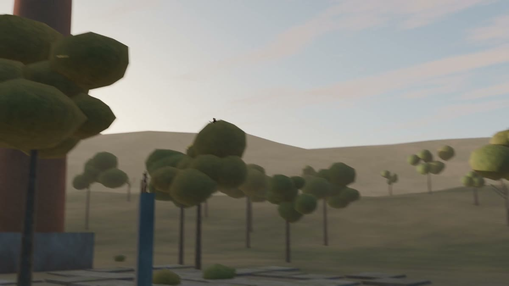
SPOTTERSSpotters and cuts
Place Spotter Cameras puts a camera on the ground near each move. Auto Cuts switches between all cameras with timeline markers. Cuts does both in one click.
Under Watch, the FPV, Chase and Cuts buttons switch the camera you look through and render with.
Flight line and drone
Flight line display
- Drawn in the viewport only, never rendered. It is the exact path of the drone's animation.
- Color: Speed (blue slow, red fastest), Moves (orange tricks, pink throttle cut) or Plain.
- Highlight Ahead: the next seconds are drawn bright, the part already flown is dimmed.
- Second Marks: a dot for every second, handy for timing.
- In Camera View: also draw it through a camera, like a racing line in FPV.
Drone
- Built-in Drone: a 5-inch freestyle quad with props and prop blur that follow the throttle. Drone Size and Accent Color.
- Use Selected as Drone: any object you choose. Front +Y, top +Z, origin at its center.
- Your Props: objects in this collection spin around their own Z with the throttle.
- The drone carries
fl_speed,fl_throttleandfl_altitude, keyed every frame, for drivers.
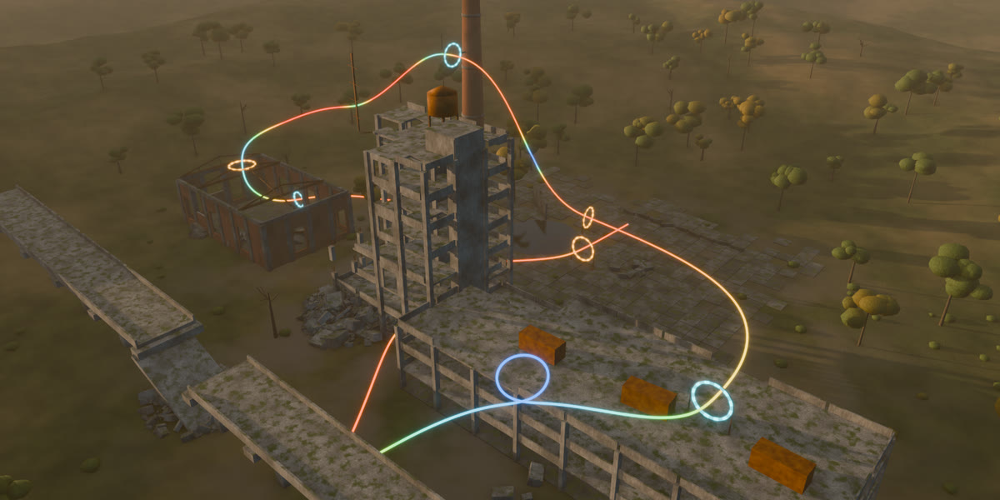
Everything lives in the Flight Line collection: FL Drone, FL FPV Camera, FL Chase Camera, the FL Route collection with the waypoints and gates, and FL Spotters.
Troubleshooting
| Symptom | Fix |
|---|---|
| No Flight Line tab | Press N in the 3D Viewport; check the add-on is enabled in Preferences. |
| A trick was flown straight through | There was no room for it. The panel names the waypoint; move it into open space or make the move smaller. |
| The flight doesn't update | The refresh button next to Fly Route is off; turn it on or press Fly Route. |
| The drone ignores a moved wall | Live updates reuse the last scan. Press Fly Route after big scene changes. |
| Far too fast or too slow | The scene isn't in meters. Scale the speeds and sizes with it. |
| "…needs about X km/h" | An Arrive at Frame pin is too early for Top Speed. Move the frame later or raise Top Speed. |
| The gap misses the opening | Select only the object with the hole (or the two objects around the space) before Gap From Selection. |
| Flight line not in the render | By design: it's a viewport guide. Render the FPV or chase camera. |
| Camera looks at the sky | Lower Camera Uptilt, or use Look Targets to aim the nose. |
| Want to start over | Reset Flight Line, confirm, then New Flight. |
Known limits and support
- One flight rig per scene.
- Very large scenes (millions of faces) take a few seconds to scan on Fly Route.
- Prop spin is limited to the built-in drone and the objects in Your Props.
- Scenes are assumed to be in meters.
- Ctrl+Z works on everything the add-on does. After an undo the restored flight is kept; if it doesn't match the waypoints, it is flown again a moment later.
Questions, bugs or a feature request? Contact LarkLab through Superhive. Include your Blender version, operating system and, if you can, the .blend.